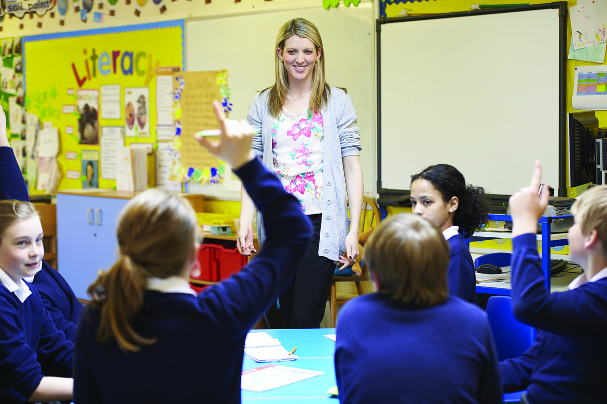

Educação
Inclusão
Projeto Semente do Amanhã (Educação)
Foco em reforço escolar para crianças e adolescentes, garantindo o acesso à tecnologia e a aulas de idiomas. Nosso objetivo é reduzir a evasão escolar na comunidade.
Quero Ajudar!